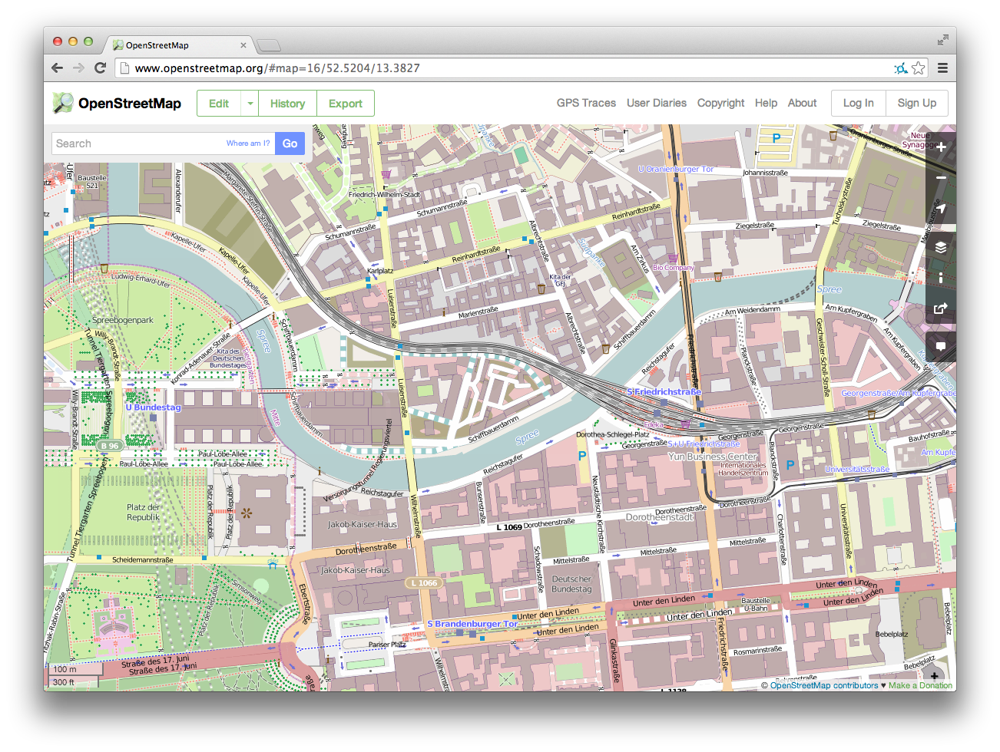
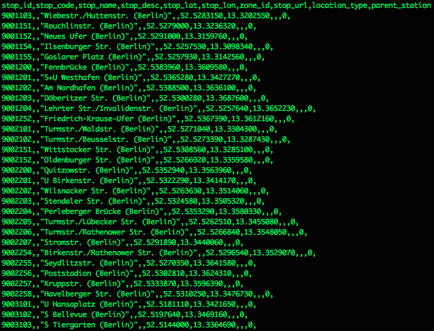
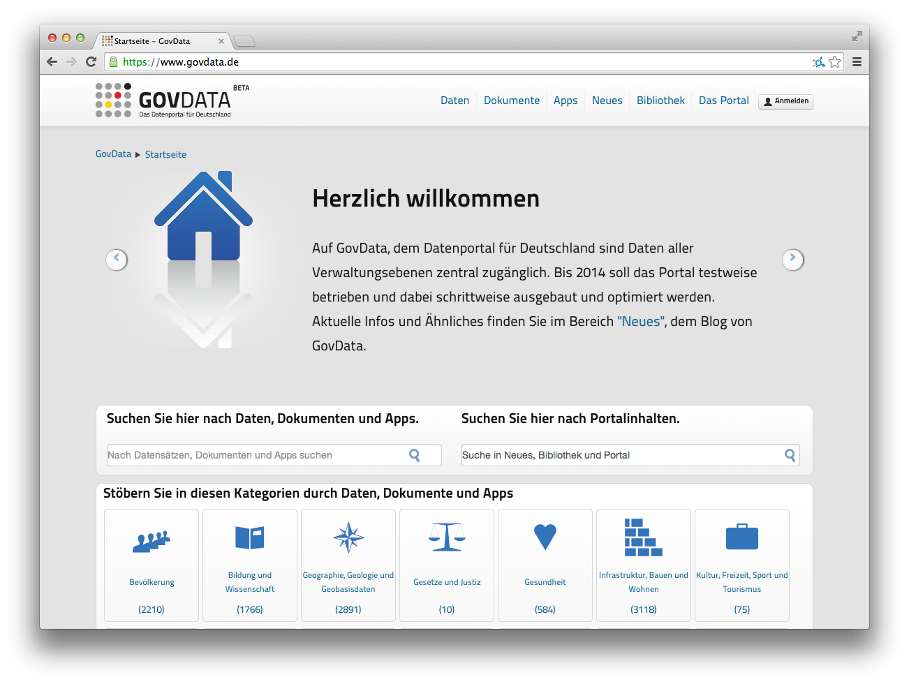
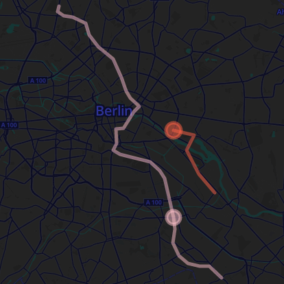
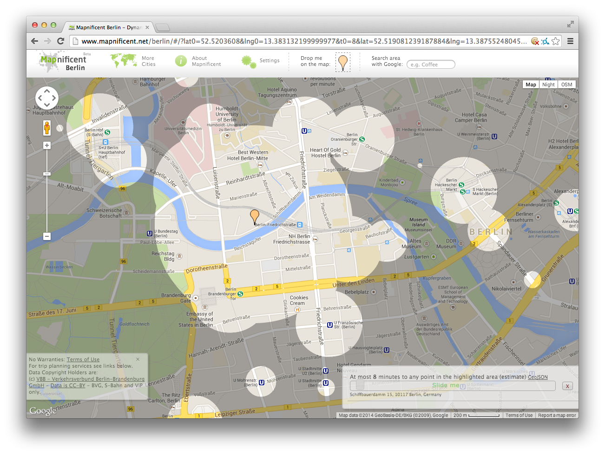
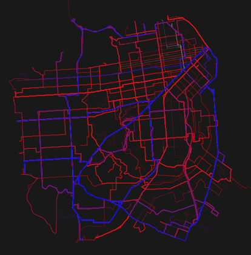

OpenStreetMap.org
Das OpenStreetMap-Projekt ist eine Sammlung von Geoinformationen und Kartendaten.
Die Informationen werden durch Freiwillige nach dem "Wikipedia-Prinzip" gesammelt und ständig aktualisiert.
Die Daten stehen unter freien Lizenzen und ihre Verwendung ist kostenfrei.
Informationen zum Projekt:
www.OpenStreetMap.org

Rohdaten zu Haltestellen und Abfahrtszeiten
Weltweit veröffentlichen immer mehr Verkehrsunternehmen ihre Fahrplaninformationen unter einer offenen Lizenz. Damit erleichtern sie anderen Unternehmen und Entwicklern die Nutzung und Weiterverwendung ihrer Informationen.
In Deutschland ist der Verkehrsverbund Berlin-Brandenburg ein Vorreiter dieser Entwicklung. Er veröffentlichte 2012 u.a. Ankunfts- und Abfahrtszeiten, Haltestellen und Linieninformationen aller Mitgliedsorganisationen.
Informationen zum Projekt:
http://daten.berlin.de/datensaetze/vbb-fahrplan2012

GovData.de
Auf Datenportalen werden Links zu unterschiedlichen Datenquellen gesammelt.
Quellen für Datenpakete mit offenen Daten können neben Firmen, Verwaltungen und wissenschaftlichen Institutionen auch online Projekte wie die Wikipedia sein.
Das zentrale Datenportal für Deutschland finden Sie unter www.govdata.de
Ein weiteres Datenportal ist das Communityprojekt www.offenedaten.de
Die Open Definition
Als "offen" werden Datensätze bezeichnet, die folgende Eigenschaften aufweisen:
- Sie sind (kosten-)frei verfügbar
- Sie dürfen ohne Einschränkung verwendet werden
- Sie liegen in offenen Dateiformaten vor (.xml/.txt/.csv)
Die genauen Bedingungen sind in der "Open Definition" festgelegt.
Informationen zum Projekt:
www.opendefinition.org/od/deutsch

Ausschnitt aus dem tron-Spielfeld
Neben Dienstleistungs-Apps können auch Computerspiele mit offenen Daten angereichert werden.
Die im Bild gezeigte Version des Computerspiels "tron", nutzt die Informationen zum Berliner S-Bahnnetz.
Im Spiel müssen in schneller Abfolge die Haltestellen abgefahren werden, ohne das sich die absolvierte Strecke der Spieler kreuzt.
Informationen zum Projekt:
www.stefanwehrmeyer.com/tron

mapnificent.net
Offene Daten ermöglichen die schnelle Umsetzung und Erweiterung von kleinen Computerprogrammen sogenannten "Apps".
Ein Beispiel dafür ist die Anwendung "mapnificient". Sie hilft festzustellen, welche Orte innerhalb einer bestimmten Zeit von Punkt A zu erreichen sind.
Auch die Anwendung "sona" nutzt offene Nahverkehrsdaten und verknüpft sie mit Informationen zum Wohnungsmarkt.
Informationen zum Projekt:
www.geographie.uni-potsdam.de/sona

Eine künstlerische Interpretation des Nahverkehrs von San Francisco
Das Liniennetz der eigenen Region kennt jeder. Doch was passiert wenn Künstler und Grafiker die Haltestellen und Streckenverläufe neu arangieren?
Das nebenstehende Beispiel ist Teil einer Kunstreihe von Michael Müller. Die Streckenabschnitte mit den meisten Verbindungen werden betont.
Offene Verkehrsdaten erleichtern Neuintepretation dieser Art und ermöglichen ungeahnte Einblicke.
Informationen zum Projekt:
www.micha.elmueller.net
Das Symbol für Creative Commons Lizenzen
Daten und Informationssamlungen unterliegen nationalen Urheberrechten. Bei der Weiterverwendung müssen deswegen oftmals individuelle Lizenzverträge abgeschlossen werden.
Die Idee freier Lizenzen hilft diese Einschränkungen der Weiterverwendung zu umgehen und das Urheberrecht Internet tauglich zu machen.
Beispiel für Modelle freier Lizenzen sind Creative Commons Lizenzen und die GNU General Public Lizenzen.
Informationen zum Thema:
de.wikipedia.org/wiki/Freie_Lizenz